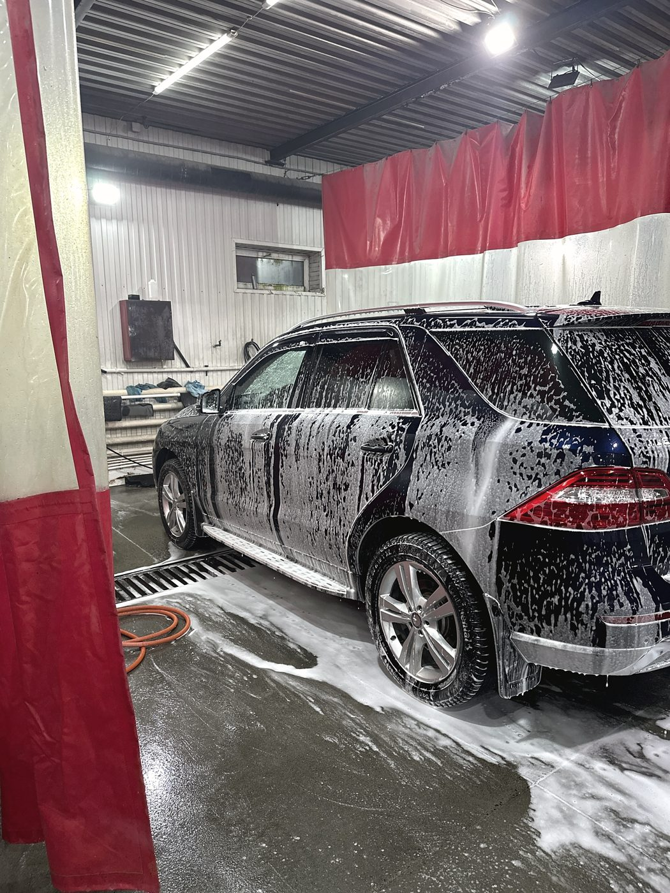
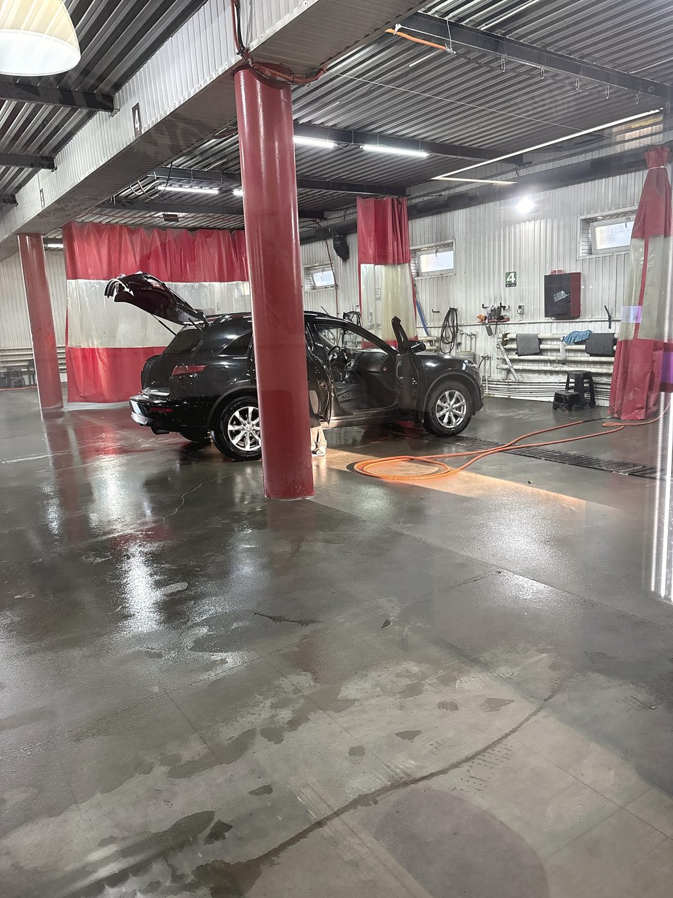
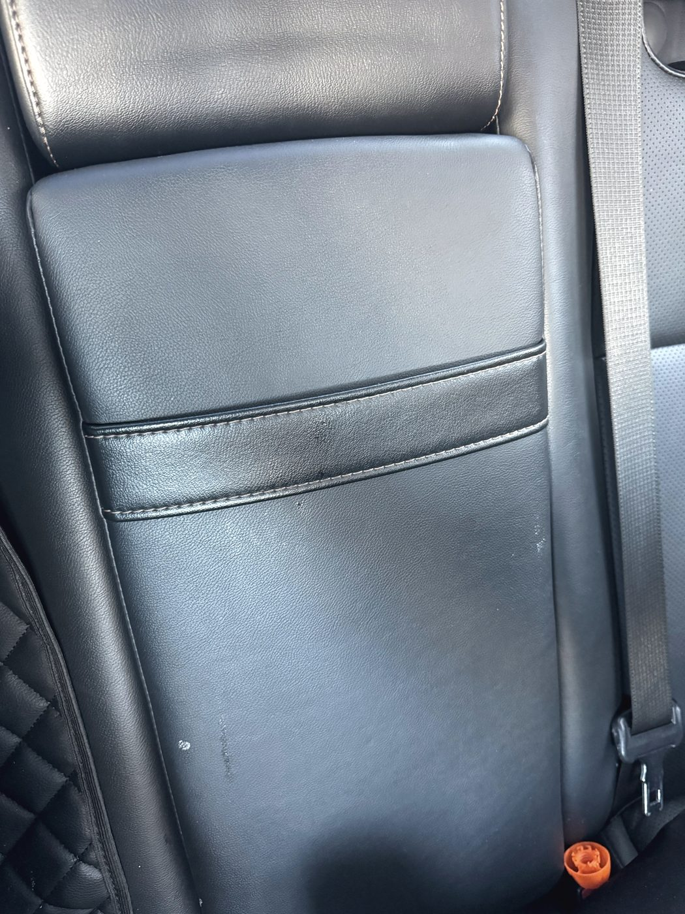
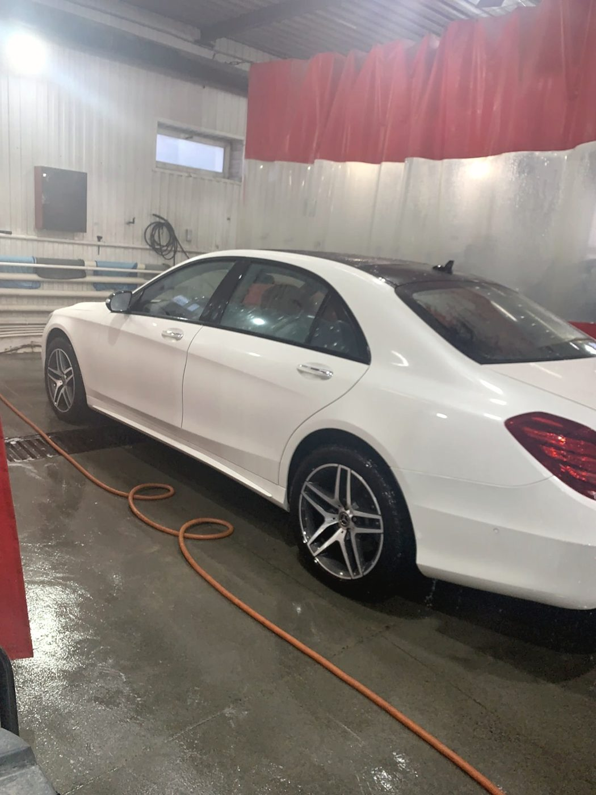
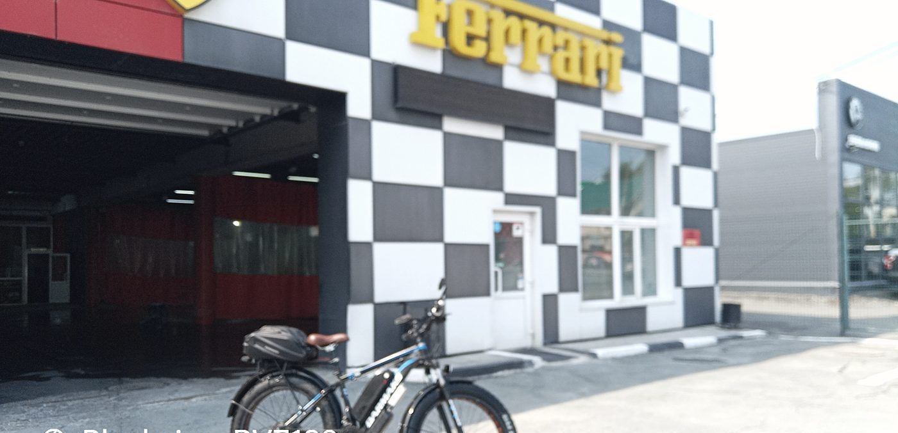
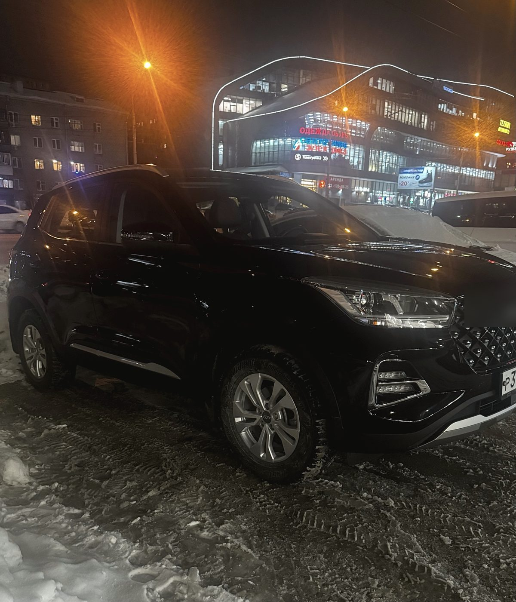
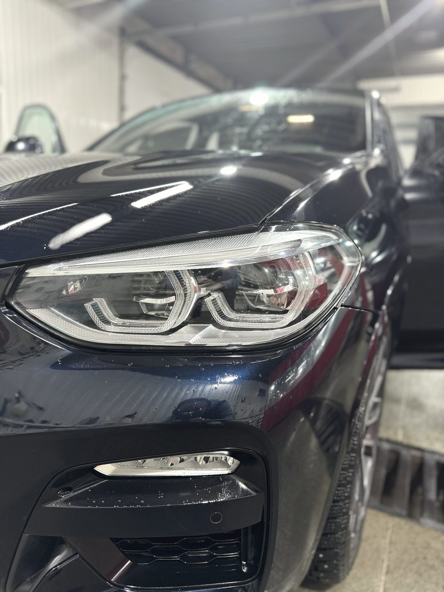
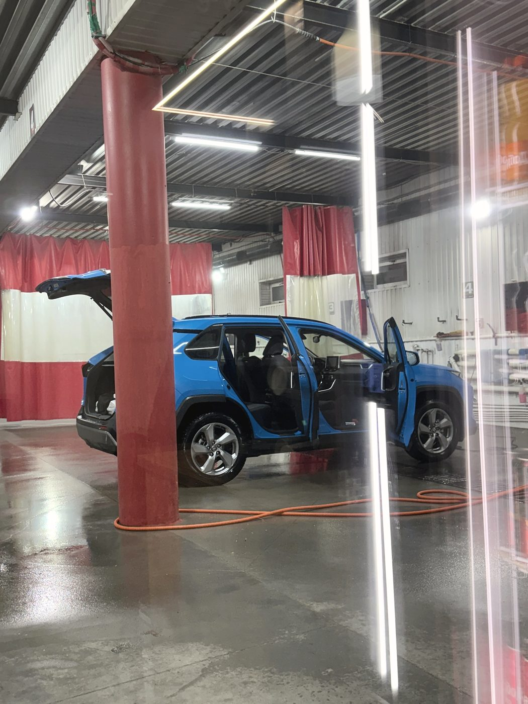

Десять постов — это и плюс, и риск
Благодаря объёму вас принимают почти всегда и почти сразу. Обратная сторона: мойщиков много, и уровень у них разный. Мы это видим в отзывах и не делаем вид, что этого нет.
Автомойка · улица Жуковского, 88 · Заельцовский район
Мы моем много и допоздна: десять машин одновременно, каждый день с девяти утра до одиннадцати вечера. Это значит, что вас почти наверняка примут сегодня — после работы, в выходной, в пятницу вечером, когда в других местах уже закрыто или запись на завтра.

Приёмка
Это не формальность и не вежливость — это наш способ держать качество при десяти постах. Администратор проверяет машину до выдачи и отправляет переделывать, если что-то не так. Но лучший контролёр — вы: посмотрите эти шесть мест, прежде чем выехать на Жуковского.
В корпусах зеркал остаётся вода, и она вытекает на дверь уже в движении. Попросите продуть — это тридцать секунд.
Брызги и капли в проёмах — самая частая претензия. Откройте двери и проведите рукой по нижней кромке.
Песок обычно прячется именно там. Поднимите коврик у водителя — по нему видно, пылесосили салон или сделали вид.
Пыль на торпедо и в дефлекторах видна не сразу, особенно если салон ещё влажный. Посмотрите под углом к свету.
Следы обуви под сиденьями — место, которое пропускают чаще всего.
Капли на сиденьях после химчистки — это не «высохнет». Скажите об этом сразу: сухой салон входит в работу, а не в удачу.
Услуги
Кузов и салон: пылесос, панель, стёкла, пороги, диски. Комплекс — от 1 000 ₽, дальше по классу машины.
Быстро, без щёток. Подходит как регулярный уход между комплексами.
Сиденья, кожа, потолок, пластик, ковролин. Отдаём сухим — это отдельный пункт, а не бонус.
Аккуратно, с укрытием того, что мочить нельзя.
Восстановительная полировка: матовость, риски, следы от чужих щёток.
Моем и грузовой транспорт. Габариты уточняйте по телефону — заезд есть не на каждый пост.



Честно
Благодаря объёму вас принимают почти всегда и почти сразу. Обратная сторона: мойщиков много, и уровень у них разный. Мы это видим в отзывах и не делаем вид, что этого нет.
Администратор проверяет машину перед выдачей и отправляет на переделку. Про это тоже пишут в отзывах — «всегда всё держит на контроле, указывает, что необходимо переделать». Если он что-то пропустил, скажите ему сами.
Заметили недочёт — не уезжайте расстроенным и не пишите об этом через неделю. Загоняем обратно и доводим. Это дешевле и быстрее и для вас, и для нас.
Зал ожидания и Wi-Fi. Можно записаться заранее, чтобы приехать к своему времени, а не в вечерний час пик.


Отзывы · 4,5 из 5 по 405 оценкам в 2ГИС
«Администратор всегда все процессы держит на контроле, указывает, что необходимо переделать»
Артём · отзыв в 2ГИС · 27 августа 2026
Мою здесь машины уже шестой год. Нет нареканий.
Ксения Куликовская · 27 июля 2026
Помыли машину очень качественно, никаких разводов. Ребята работают быстро и аккуратно, чувствуется профессиональный подход. Цены адекватные.
Анастасия Разгоняева · 30 июня 2026
Автомобиль отмывают, покрывают воском, после них машина чистая. Моя оценка 10 из 10.
Артём · 27 августа 2026
Спасибо ребятам, заехал, конечно, не на машине — помыли велик, в принципе, неплохо помыли, спасибо ещё раз.
Отзыв в 2ГИС · 21 июля 2026


Контакты